DAILY DAIRY
DIVE INTO MY COLLECTION — A MILK CAP A DAY, EVERY DAY.
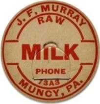
J.F. Murray Raw Milk, Circa 1940s
Good, some fading and minor edge wear
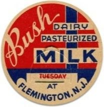
Bush's Pasteurized Milk, Circa 1950s
Very Good, slight discoloration, clean surface
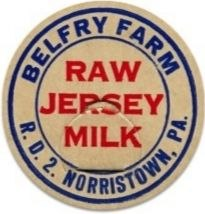
Belfry Farm Raw Jersey Milk, Circa 1930s
Fair, noticeable wear, some staining
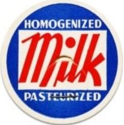
Homogenized Milk - Pasteurized, Circa 1960s
Excellent, vibrant colors, minimal wear
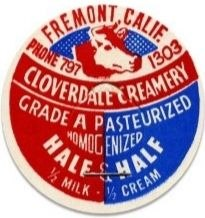
Bush's Pasteurized Milk, Circa 1950
Good, some fading and minor edge wear
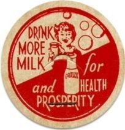
Drink More Milk - For Health and Prosperity, Circa 1950s
Good, minor scuffs, but colors are still bright
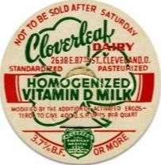
Cloverleaf Dairy Vitamin D Milk, Circa 1940s
Very Good, clean surface, slight edge wear
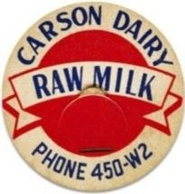
Carson Dairy Raw Milk, Circa 1950s
Fair, significant surface wear, some discoloration
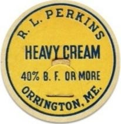
R.L. Perkins Heavy Cream, Circa 1940s
Good, some fading and minor edge wear
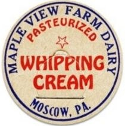
Maple View Whipping Cream, Circa 1945s
Very Good, clean surface, slight edge wear
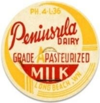
Peninsula Dairy Milk, Circa 1950s
Very Good, slight discoloration, clean surface
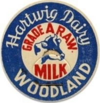
Hartwig Dairy Grade A Raw Milk, Circa 1930s
Fair, noticeable wear, some staining